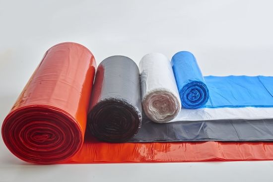

RECIKLO SOT,
Si mund te ndihmojme komunen per te recikluar ?

Thaset e plehrave zakonishte kane ngjyra te ndryshme. Megjithatë, këto ngjyra nuk bëhen vetëm për të bërë që plehrat të duken estetikisht të mira për sytë. Ngjyrat shërbejnë gjithashtu si shenja për të organizuar se cilat plehra duhet të jenë brenda.
- E Zeze -Zakonisht është për plehra jo-biodegraduese, jo infektive, polipropiletë, mbështjellës karamele etj.
- E Gjelber -Është për materiale të biodegradueshme si ushqime të mbetura, lëvore te frutave , gjethe, degëzime etj.
- E Kuqe-Përdoret zakonisht në spitale për mbetje bio të rrezikshme si shiringa me gjak, tuba testimi, mbetje njerëzore, etj.
- E Kalter-Zakonisht përdoret për materiale industriale si qelqi, plastika e rëndë etj.
- Transparente-Zakonisht përdoret për të mbajtur produkte të riciklueshme si kanaçe, shishe, letra etj.